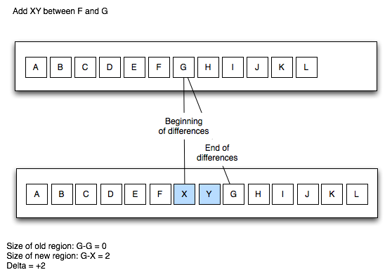
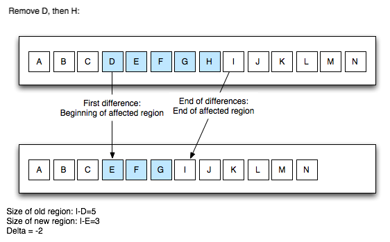

GSF supports incremental updating. As the name implies, this means that there is support to do cheaper incremental updates to data, insead of computing everything from scratch, when something changes in the editor. This shows up in several places:
<script> block in an HTML file. The virtual
source provider for CSS knows that this doesn't affect CSS. Therefore,
several optimizations are possible:
If you tell the infrastructure that you support incremental updating, GSF will keep some extra data around. First, it will keep your most recent parser result (and for embedded files, you more recent virtual source translation). Second, it will keep track of all the edits that have occurred since the last parser request.
When it's time to parse your file again, your incremental parser will be handed the edit history, and your previous parser result, and you can create a new parser result by analyzing your previous result and the edit deltas.
The most important concept for incremental updating is the
EditHistory object.
GSF provides you with an EditHistory object when
you are asked to parse (for incremental parsers) or when you are
asked to generate a virtual source (for incremental embedding models).
The EditHistory object provides information about
all the edits that have occurred since your last parse job.
Along with the EditHistory object, you are passed your
most recent result, such that you can base your incremental computations
on it.
The EditHistory tracks edits accurately, so you can use the
convertOldToNew() method to translate a pre-edits offsets
to a post-edits offsets. However, the EditHistory maintains a
more interesting concept: the affected region. The affected
region is roughly the start and end offsets in the original document
and the corresponding start and end offsets in the edited document.
You can think of the affected region as the "damaged region".
Everything before and after the affected region was unchanged.
The following key attributes are provided by EditHistory:
offset and offset+originalSize has been modified,
and after the edits, this region corresponds to
offset to offset+editedSize. Put another way,
all document positions below offset are unaffected by the edits,
and all document positions above offset+originalSize are uniformly
shifted up by a delta of editedSize-originalSize (which can be negative,
when more text was deleted than added).
Here's how this works. First, let's suppose we insert some text:

Here, we've inserted XY between the characters F
and G. Here, the offset where the differences
begin is 6. In the old document, the differences also end at offset 6,
whereas in the edited document, the differences end at 8.
Therefore, our offset is 6, the originalSize is 0,
the editedSize is 2, and therefore the delta is +2.
Here's a more complicated example, where we've performed multiple edits.
The affected region is going to be the extent surrounding all edits
from the edits to the lowest offset in the document, to the edits at the
highest offset in the document:

Here's we've deleted one character from two different locations in
the document - D and H. The blue regions
show the old region and the new corresponding region. Yes, some
of the contents within the old region are still there in the new region,
but the key point is that before the affected offset,
both documents are identical, and similarly, after the end of the
affected regions, both documents are identical. Typically, when
a user is editing, the changes will be local to a small region
(such as a function body), and an incremental parser can decide
that the entire affected region is in an incrementally parseable block.
It can also use the block delta to adjust offsets - add the delta
to all offsets outside the old region block.
To implement incremental parsing, rather than extending the plain Parser interface, implement the IncrementalParser interface instead. GSF will store the most recent parser result, and track editing history, for source files that are parsed by an incremental parser. The first time the file is opened, no previous parser result is available, so the plain parsing method will be called. However, for subsequent edits, the incremental parser will be called instead. If it fails, the regular parse method will be called instead.
Your incremental parser will typically perform the following steps:
EditHistory's offset.
setUpdateState
with ParserResult.UpdateState.NO_SEMANTIC_CHANGE
and you're done.
EditHistory and make sure the entire
affected region (history.getStart() and history.getOldEnd)
is completely inside the function body. If not, we've edited outside
of just a single function, so just exit.
history.convertOldToNew(oldFunctionEnd).
That's right, the end of the function is outside the edited region,
so (as described in the EditHistory section above) we just have to take
the old offset and shift it by history.getSizeDelta().
document.getText(offset, newEnd-offset).
oldFunctionStart, so add oldFunctionStart
to all AST node start and end offsets to shift the AST nodes to their
correct place in the edited buffer.
history.getStart()
can be left alone, and all offsets greater than or equal to
history.getOldEnd() should be incremented by
history.getSizeDelta(). There are methods on the EditHistory
object to do this.
EditHistory affected region since
we recompiled the entire function, not just the affected region) should
be removed, and all other errors passed on. Finally, add in our new
error messages from the compiled method.
ParserResult instance, initialize
it with our AST, our updated error list, and set its setUpdateState
to ParserResult.UpdateState.UPDATED. We also store in our
own ParserResult, references to the old and new function nodes we replaced.
This will be used by feature implementations like our SemanticAnalyzer
to perform incremental semantic analysis by only looking at the given
function node subtree.
The previous section described how to perform incremental parsing. From the checklist you can see that implementing incremental parsing isn't nontrivial. It may be even more difficult in cases where you don't own the parser yourself. For example, for Ruby, Python and Groovy the parser will probably be JRuby, Jython, and Groovyc respectively, so parsing method bodies for example will require support in the corresponding projects.
That doesn't mean incremental updating isn't possible. Parsing itself will have to process the full AST, but you can still analyze the edited region and reduce the amount of work.
As before, you should implement the
IncrementalParser
interface, such that GSF will pass your previous parser result and the EditHistory
to you. Then, you parse the request - and unfortunately, you'll be parsing the entire
document.
However, you should now use the EditHistory along with the previous
ParserResult to see whether the changes were local to a single block
such as a method. If they were, you can also compute exactly which method was just
updated, by looking up the corresponding offset in the EditHistory
and looking in your new parser result.
Now you know that only a single method in your new parser result is actually "new". In your downstream feature implementations, such as the semantic analyzer, you can use this information to combine your previous result (which you stashed on your previous parser result), with local computations based only on the changed method.
Therefore, you can drive the often more expensive computations (type analysis, semantic analysis, navigator/outline computations, etc) to do simple, incremental updates, even if the parse tree itself was fully regenerated by a non-incremental parser!
GSF supports embedding through "embedding models", which produce a "virtual source",
one for each targeted parser language in an embedded language. For example,
in an RHTML file, there is a virtual source generated for JavaScript (which gives
a JavaScript view of the file, typically concatenating the various
<script> blocks and a few other things), as well as one for
CSS, and one for Ruby.
Each virtual source translator takes the original source language and computes a virtual source. With the incremental update support, a virtual source translator can tell the infrastructure that it supports incremental updates. First, instead of implementing the EmbeddingModel interface as before, implement IncrementalEmbeddingModel.
Once you do that, GSF will cache your virtual source for you, and when it's time
to update the virtual source parse trees, it will call your incremental
embedding model and pass it your previous virtual source and an
EditHistory object. You can use the EditHistory to
determine if the edits affects your virtual source.
For example, for JavaScript, if you've edited something inside
the <style> element (CSS code), the edit can't possibly affect
the JavaScript virtual source. Therefore, the virtual source doesn't change,
and therefore the previous JavaScript parse tree for the virtual source doesn't
have to be reparsed - it doesn't even have to be updated for new AST offsets,
since the AST itself hasn't changed. However, the embedding model itself
is responsible for mapping AST offsets to source document offsets.
Therefore, the incremental embedding model needs to go through its
position mapping tables and update them. Again, this typically just means
shifting positions above the affected region up by the edit history's
size delta.
If this succeeds, your embedding model can just return
IncrementalEmbeddingModel.UpdateState.COMPLETED. This tells the
infrastructure that the embedding model was updated, and there is nothing else
to do - it doesn't have to parse the result of the virtual source!
But what if the user edited something in an edit region that affects the
virtual source? In that case, it can simply return
IncrementalEmbeddingModel.UpdateState.FAILED. This tells the
infrastructure that an incremental update cannot be completed, and GSF
will perform a new (non-incremental) virtual source translation, and
parse the result.
Finally, if you're somewhere in between - you updated the virtual source
such that it now reflects the recent edits, but the model changed such that
it must be reparsed, return
IncrementalEmbeddingModel.UpdateState.UPDATED. This tells the
infrastructure that the virtual source is up to date and that a parse
result should be computed for it.
Here's a complete example of how this works for an embedding model; this is the CSS embedding model's incremental update:
IncrementalEmbeddingModel.UpdateState incrementalUpdate(EditHistory history) {
// Clear cache
// prevLexOffset = prevAstOffset = 0;
prevLexOffset = history.convertOldToNew(prevLexOffset);
int offset = history.getStart();
int limit = history.getOldEnd();
int delta = history.getSizeDelta();
boolean codeOverlaps = false;
for (CodeBlockData codeBlock : codeBlocks) {
// Block not affected by move
if (codeBlock.sourceEnd <= offset) {
continue;
}
if (codeBlock.sourceStart >= limit) {
codeBlock.sourceStart += delta;
codeBlock.sourceEnd += delta;
continue;
}
if (codeBlock.sourceStart <= offset && codeBlock.sourceEnd >= limit) {
codeBlock.sourceEnd += delta;
codeOverlaps = true;
continue;
}
return IncrementalEmbeddingModel.UpdateState.FAILED;
}
return codeOverlaps ? IncrementalEmbeddingModel.UpdateState.UPDATED : IncrementalEmbeddingModel.UpdateState.COMPLETED;
}
ParserResult stores an UpdateState enum value
indicating what kind of update was performed. For example, if it is
NO_SEMANTIC_CHANGE we know that in this parser result,
nothing in the AST changed (though offsets may have changed).
This lets the infrastructure know that it can take certain shortcuts.
For example, semantic highlighting won't recompute the data, it will just
update its own offsets based on the edit history.
Not all GSF feature implementations are using the incremental data yet; this will change as soon as possible...
You should use the same approach for feature implementations in your language
plugin. Start with the most expensive computations (for example, type
analysis), and use the "what changed" data (either the EditHistory,
or specific parse tree nodes derived from the EditHistory)
to just filter your previously computed result.